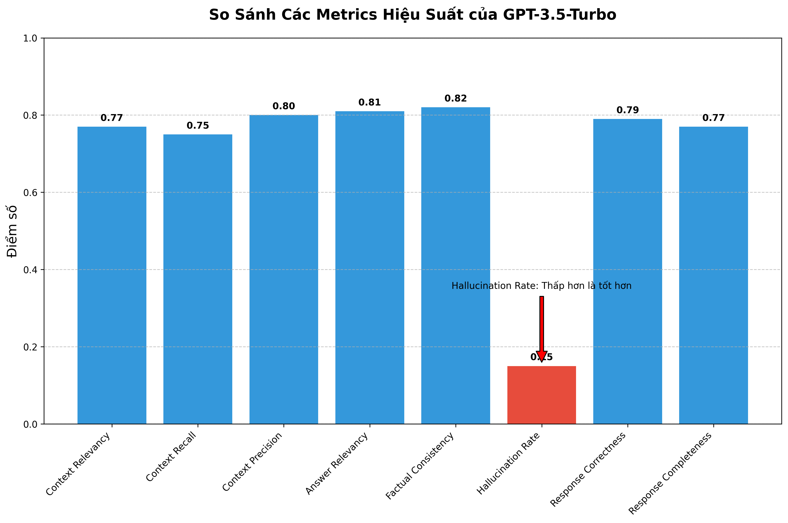

Báo Cáo Đánh Giá GPT-3.5-Turbo
Tổng Quan
GPT-3.5-Turbo là mô hình phổ biến của OpenAI, được thiết kế để cân bằng giữa hiệu suất và chi phí. Báo cáo này trình bày kết quả đánh giá hiệu suất của GPT-3.5-Turbo trên bộ test case RAG Chatbot gồm 100 câu hỏi đa dạng.
Điểm tổng thể: 0.793
Factual Consistency: 0.82
Answer Relevancy: 0.81
Hallucination Rate: 0.15
Metrics Đánh Giá
Đánh giá dựa trên 8 metrics chính về hiệu suất retrieval và chất lượng response:
Context Relevancy
0.77
Độ phù hợp của ngữ cảnh được truy xuất với câu hỏi.
Context Recall
0.75
Khả năng truy xuất thông tin liên quan từ kho kiến thức.
Context Precision
0.80
Độ chính xác của thông tin được truy xuất.
Answer Relevancy
0.81
Độ phù hợp của câu trả lời với câu hỏi.
Factual Consistency
0.82
Độ nhất quán với sự thật của câu trả lời.
Hallucination Rate
0.15
Tỷ lệ tạo ra thông tin sai lệch (càng thấp càng tốt).
Response Correctness
0.79
Độ chính xác tổng thể của câu trả lời.
Response Completeness
0.77
Độ đầy đủ của câu trả lời đối với yêu cầu.
Hiệu Suất Theo Lĩnh Vực
GPT-3.5-Turbo được đánh giá trên 4 lĩnh vực y tế khác nhau để đánh giá tính đa dạng và khả năng áp dụng:
| Lĩnh Vực |
Điểm Số |
Đánh Giá |
| Hỏi đáp Bộ Y Tế |
0.81 |
Tốt |
| Hỏi đáp về Sức Khoẻ |
0.76 |
Khá |
| Chẩn đoán bệnh Gan |
0.73 |
Khá |
| Chẩn đoán nguy cơ Tiền Sản Giật |
0.79 |
Khá |
Điểm Mạnh và Điểm Yếu
Điểm Mạnh
- Chi phí thấp: Chi phí vận hành thấp nhất trong số các mô hình được đánh giá.
- Tốc độ phản hồi: Thời gian xử lý nhanh, chỉ chậm hơn O3-mini.
- Hiệu suất tương đối tốt trong các tác vụ thông thường: Đạt kết quả khá trong lĩnh vực general (0.81).
- Khả năng tiếp cận: Dễ dàng triển khai và phổ biến rộng rãi trong nhiều ứng dụng.
Điểm Yếu
- Hallucination cao: Tỷ lệ hallucination (0.15) cao nhất trong tất cả các mô hình so sánh.
- Hiệu suất thấp trong lĩnh vực chẩn đoán bệnh Gan: Lĩnh vực chẩn đoán bệnh Gan có điểm thấp nhất (0.73), thiếu độ chính xác trong xử lý thông tin chuyên sâu về bệnh gan.
- Factual Consistency thấp: Độ nhất quán với sự thật (0.82) thấp hơn so với các mô hình khác, dẫn đến thông tin kém tin cậy hơn.
- Response Correctness thấp: Độ chính xác tổng thể của câu trả lời (0.79) thấp nhất trong các mô hình so sánh.
- Thiếu độ chính xác trong các lĩnh vực y tế chuyên sâu: Hiệu suất ở các lĩnh vực chẩn đoán cần được cải thiện đáng kể.
So Sánh Với Các Mô Hình Khác
Bảng so sánh hiệu suất của GPT-3.5-Turbo với các mô hình khác trong cùng bộ test case:
| Metric |
GPT-3.5 |
O3-mini |
GPT-4 |
GPT-4o |
GPT-4.5 |
| Context Relevancy |
0.77 |
0.79 |
0.81 |
0.83 |
0.85 |
| Factual Consistency |
0.82 |
0.84 |
0.86 |
0.88 |
0.91 |
| Hallucination Rate |
0.15 |
0.12 |
0.10 |
0.09 |
0.07 |
| Điểm Tổng Thể |
0.793 |
0.815 |
0.845 |
0.870 |
0.895 |
| Chi Phí Tương Đối |
Thấp nhất |
Thấp |
Trung bình |
Cao |
Cao nhất |
Biểu Đồ Hiệu Suất

Biểu đồ so sánh các metrics hiệu suất của GPT-3.5-Turbo
Kết Luận
GPT-3.5-Turbo là một lựa chọn tốt cho các ứng dụng RAG Chatbot có ngân sách hạn chế hoặc yêu cầu phản hồi nhanh. Mặc dù hiệu suất của mô hình này không cao bằng các mô hình mới hơn như GPT-4o hay GPT-4.5, nhưng nó vẫn cung cấp khả năng xử lý thông tin tương đối tốt với chi phí thấp hơn đáng kể.
Mô hình này phù hợp nhất cho:
- Các ứng dụng chatbot với lưu lượng truy cập cao và yêu cầu tiết kiệm chi phí
- Các dự án thử nghiệm và phát triển ban đầu
- Các ứng dụng xử lý thông tin tổng quát không yêu cầu độ chính xác cao
- Các hệ thống với lưu lượng truy cập lớn cần cân bằng chi phí vận hành
Tuy nhiên, nên cân nhắc nâng cấp lên mô hình cao cấp hơn cho:
- Các ứng dụng trong lĩnh vực pháp lý, y tế cần độ chính xác cao
- Các hệ thống cần giảm thiểu tỷ lệ hallucination
- Các ứng dụng yêu cầu khả năng suy luận phức tạp